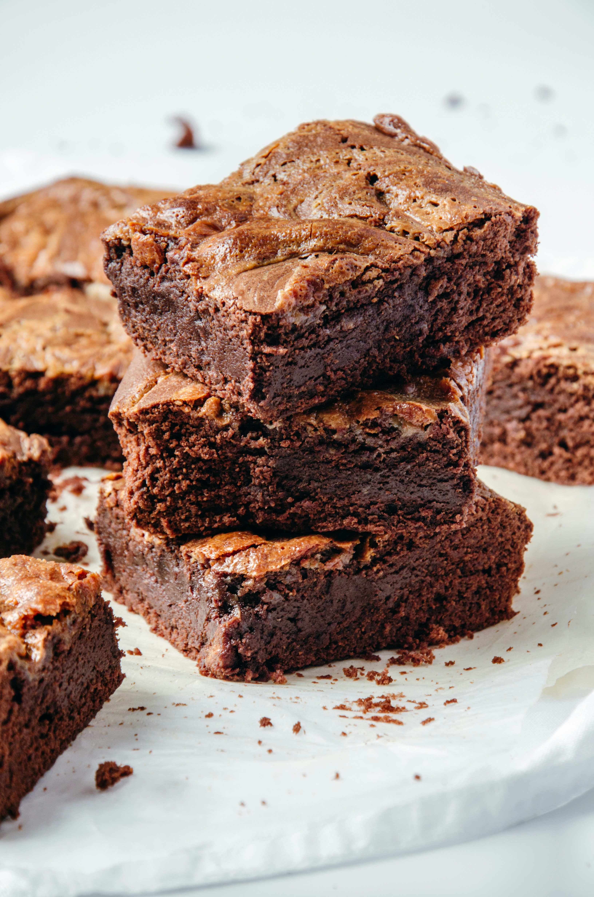

Brownies recipe
Home

Ingredients
- 1/2 cup (14 tbsp) unsalted butter, melted
- 1 1/4 cups dark chocolate chips or pieces
- 1 cup brown sugar, loosely packed
- 3 large eggs, lightly beaten
- 1 tsp vanilla extract
- 1/2 cup plain all-purpose flour
- 1/4 cup cocoa powder, sifted
- A pinch of salt
Procedure
- Preheat your oven to 350°F (180°C). Line an 8x8-inch baking pan with parchment paper.
- Melt the butter and dark chocolate together in a heatproof bowl. Stir until smooth.
- Mix in the brown sugar and vanilla extract.
- Whisk in the beaten eggs until the mixture is glossy and smooth.
- Stir in the flour, sifted cocoa powder, and salt until just combined. Do not overmix.
- Pour the thick batter into your prepared baking pan and smooth the top.
- Bake for 28 minutes, or until a toothpick inserted into the center comes out with a few moist crumbs.
- completely in the pan before slicing into squares.
If you'd like, let me know if you want to add nuts (like walnuts or pecans) or prefer a different frosting option!